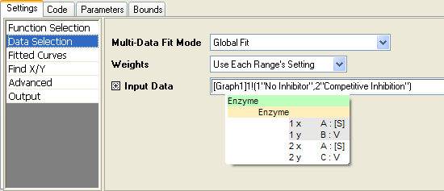
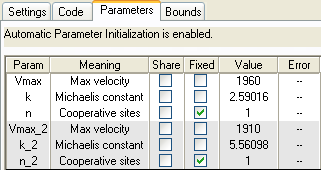
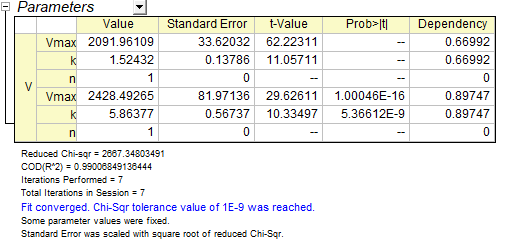
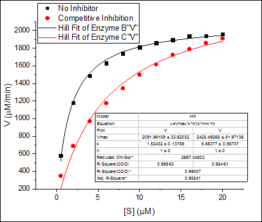
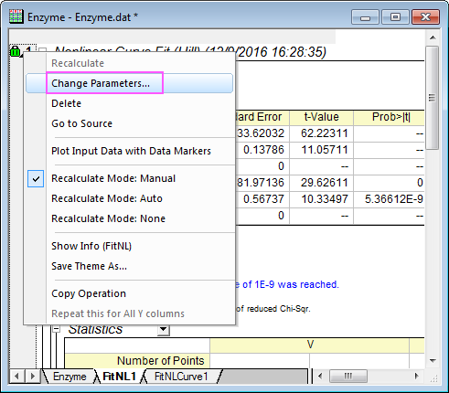
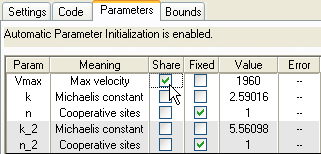
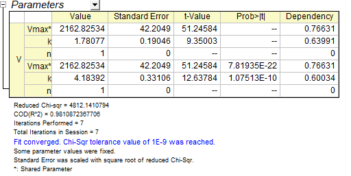
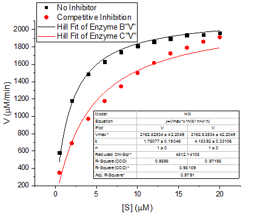

Globale Anpassung mit gemeinsamen Parametern
Fitting-Global
Zusammenfassung
Der Term "globale Anpassung" bezieht sich im Allgemeinen auf gleichzeitige Operationen der Kurvenanpassung, die auf mehrere Datensätze angewendet werden. Da Datensätze eindeutig bleiben, können sie die Parameterwerte während des Anpassungsprozesses gemeinsam nutzen oder auch nicht. Wenn ein Parameter gemeinsam nutzt wird, wird ein einzelner Parameterwert für alle Datensätze berechnet; wenn ein Parameter nicht gemeinsam genutzt wird, wird ein separater Parameterwert für jeden Datensatz berechnet.
Im Gegensatz dazu wird die "zusammengefasste Anpassung" durchgeführt, indem alle Datensätze in einem einzelnen Datensatz kombiniert werden. Da Operationen der Kurvenanpassung auf einen einzelnen Datensatz durchgeführt werden, wird nur ein einzelner Satz von Parameterwerten zurückgegeben.
Seit 2016 SR2 gibt es die neue App Sequential Fit zum Durchführen einer sequenziellen Anpassung von mehreren Datensätzen. Mit dieser App werden die Anpassungsparameterwerte, die dem aktuellen Datensatz entnommen sind, verwendet, um die Parameter des nächsten Datensatzes zu initialisieren. Dies lässt sich besonders gut auf Datensätze anwenden, deren gemeinsame Parameter sich abwechselnd ändern.
Was Sie lernen werden
Dieses Tutorial zeigt Ihnen, wie Sie:
- mehrere Datensätze zum Anpassen auswählen.
- verschiedene Anpassungsmodi auswählen.
- die globale Anpassung durch gemeinsame Nutzung von Parametern durchgeführt wird.
Schritte
- Öffnen Sie eine neue Arbeitsmappe, indem Sie auf die Schaltfläche
 klicken.
klicken.
- Klicken Sie auf
 , um die Datei Enzyme.dat aus dem <Origin-Verzeichnis>\Samples\Curve Fitting\ zu importieren.
, um die Datei Enzyme.dat aus dem <Origin-Verzeichnis>\Samples\Curve Fitting\ zu importieren.
- Markieren Sie Spalte B und C und klicken Sie auf die Schaltfläche
 , um ein Punktdiagramm zu erzeugen.
, um ein Punktdiagramm zu erzeugen.
- Lassen Sie das Diagrammfenster aktiviert und wählen Sie Analyse: Anpassen: Nichtlinearer Fit, um den Dialog NLFit aufzurufen.
- Setzen Sie den Modus von Neu berechnen auf Auto.
- Wählen Sie auf der Seite Funktionsauswahl die Funktion Hill aus der Kategorie Growth/Sigmoidal.
- Wechseln Sie zur Seite Datenauswahl, klicken Sie auf die dreieckige Schaltfläche neben Eingabedaten und wählen Sie Alle Zeichnungen in aktivem Layer hinzufügen, um beide Zeichnungen als Eingabedaten hinzuzufügen.
- Wählen Sie Allgemeiner Fit (globaler Fit) in der Auswahlliste Fitmodus für mehrere Datensätze:

- Wechseln Sie zur Registerkarte Parameter. Aktivieren Sie das Kontrollkästchen Fest für n und n_2, um ihre Werte auf 1 festzulegen.

- Klicken Sie auf die Schaltfläche Fit, um die Kurven anzupassen. Sie können diese Ergebnisse in der Tabelle Parameter des Berichtsblatts erhalten:

- Die angepassten Kurven werden zu der ursprünglichen Datenzeichnung hinzugefügt.

- In diesem Fall ist die maximale GeschwindigkeitVmax möglicherweise die gleiche. Daher kann dieser Parameterwert zum Anpassen gemeinsam genutzt werden.
- Klicken Sie auf das Symbol des grünen Schlosses und wählen Sie Parameter ändern, um den Dialog NLFit erneut aufzurufen.

- Wechseln Sie zur Registerkarte Parameter und aktivieren Sie das Kontrollkästchen Teilen für Vmax.

- Klicken Sie auf die Schaltfläche Fit, um die Ergebnisse zu aktualisieren. Sie können sehen, dass die Werte von Vmax für beide Kurven die gleichen sind. Das Sternchen im Parameternamen bedeutet, dass dieser Parameter gemeinsam verwendet wird:

- Die angepasste Kurve wird automatisch aktualisiert.
